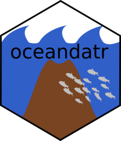

Create a spatial grid
get_grid.RdCreates a spatial grid, in terra::rast() of sf format, for
areas within the boundaries provided
Arguments
- boundary
sfobject with boundary of the area(s) you want a grid for, e.g an EEZ or country. Boundaries can be obtained usingget_boundary()- resolution
numeric; the desired grid cell resolution in same units (usually metres or degrees) ascrs:sf::st_crs(crs, parameters = TRUE)$units_gdal- crs
a coordinate reference system:
numeric(e.g. EPSG code4326),character(e.g."+proj=longlat +datum=WGS84 +no_defs"), or object of classsforsfc. This is passed tosf::st_crs()- output
characterthe desired output format, either"raster","sf_square"(vector), or"sf_hex"(vector); default is"raster"- touches
logical. IfTRUEall cells touched by theboundarywill be included, and ifFALSEonly cells whose center point (centroid) falls within theboundaryare included. Default isFALSE.
Details
For a terra::rast() format grid, each cell within the boundary is
set to value 1, whereas cells outside are NA. For sf grids, the grid covers
the boundary area and cells can be square (output = "sf_square") or
hexagonal (output = "sf_hex"). By default only cells whose centroids fall
within the boundary are included in the grid. To include cells that touch
the boundary use touches = TRUE. sf::st_make_grid() is used to create
sf grids. The default ordering of this grid type is from bottom to top,
left to right. In contrast, the terra::rast() grid is ordered from top to
bottom, left to right. To preserve consistency across the data types, we have
reordered sf grids to also fill from top to bottom, left to right.
Examples
# use get_boundary() to get a polygon of Samoa's Exclusive Economic Zone
samoa_eez <- get_boundary(name = "Samoa")
#> Cache is fresh. Reading: /tmp/RtmpAXFBmI/eez-d0aa43d6/eez.shp
#> (Last Modified: 2026-06-23 01:19:44.286154)
# You need a suitable coordinate reference system (crs) for your area of interest,
# https://projectionwizard.org is useful for this purpose. For spatial planning,
# equal area projections are normally best.
samoa_projection <- '+proj=laea +lon_0=-172.5 +lat_0=0 +datum=WGS84 +units=m +no_defs'
# Create a grid with 5 km (5000 m) resolution covering the `samoa_eez`
# in a projection specified by `crs`.
samoa_grid <- get_grid(boundary = samoa_eez, resolution = 5000, crs = samoa_projection)